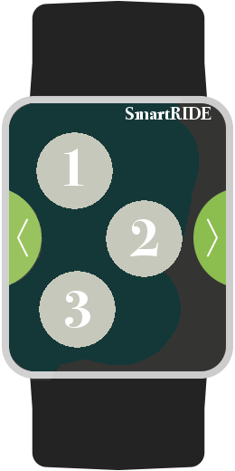

Smartwatch are finding ways to our steering wheel. This makes simple controls like navigation and music playing easier and safer. As a Lyft driver, I thought having some basic control of my phone during the driver mode with a smartwatch would be very helpful. I am therfore building a mobile application to help me pickup passengers, switch to navigation, and drop them off.
The watch offers a number of touch points that can range in number and size as preferred. The points can also be dragged on the screen. 
The application will also run on the background of the Smartphone. The corresponding points will appear in the Smartphone display which can be dragged and adjusted to preferrable size. Once the points are set, touching the points on the Smart Watch will give a corresponding touch response in the SmartPhone.